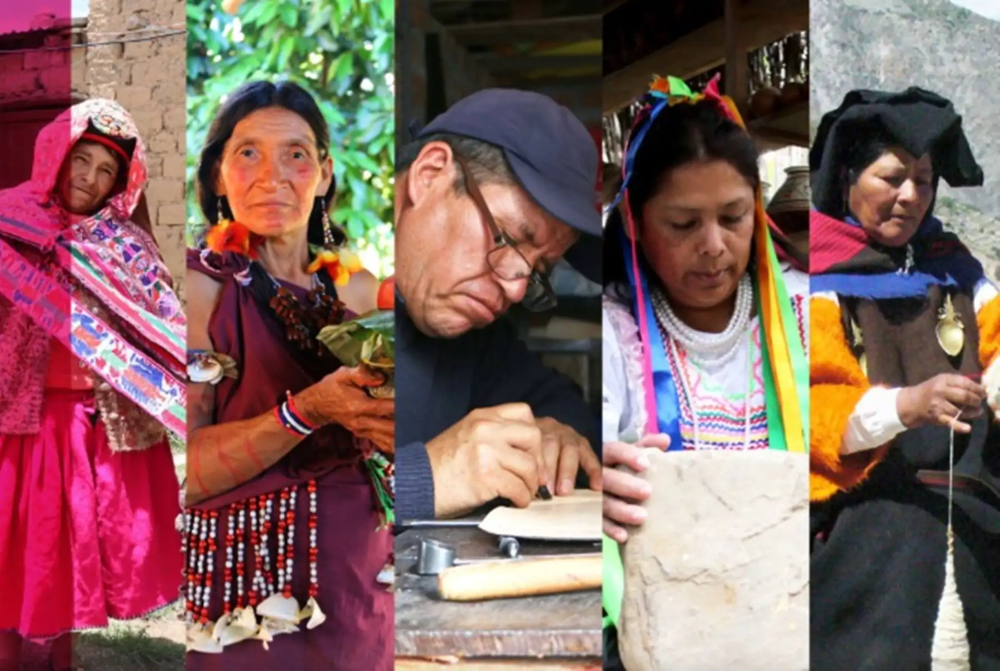

Cultural identity

Handicrafts strengthen cultural identity by keeping ancestral knowledge, symbols and worldviews alive. Designs, colors and motifs tell stories about the land, local myths and everyday life. For many communities, creating and using these objects is a way to feel proud of who they are and where they come from.